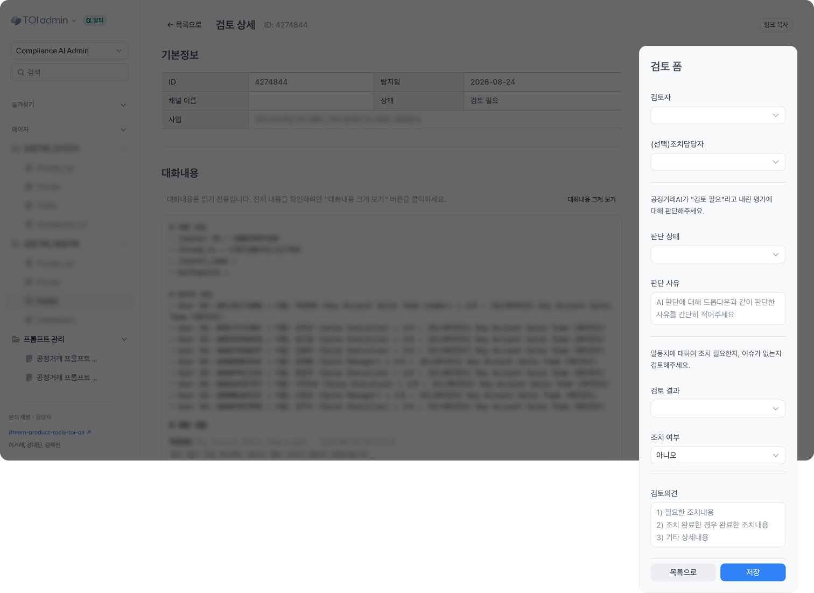
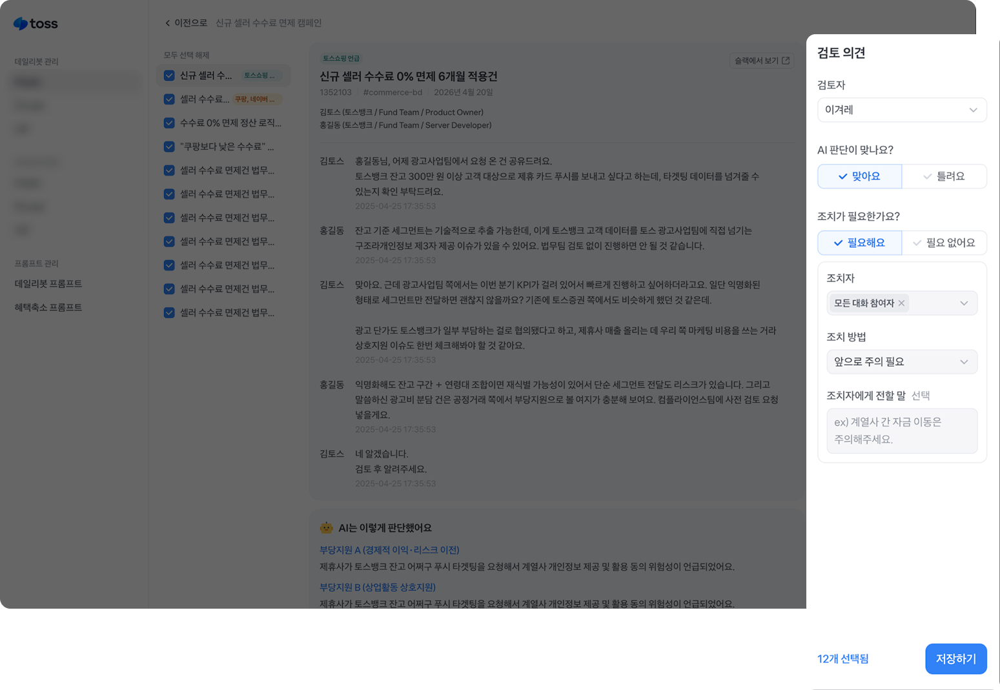
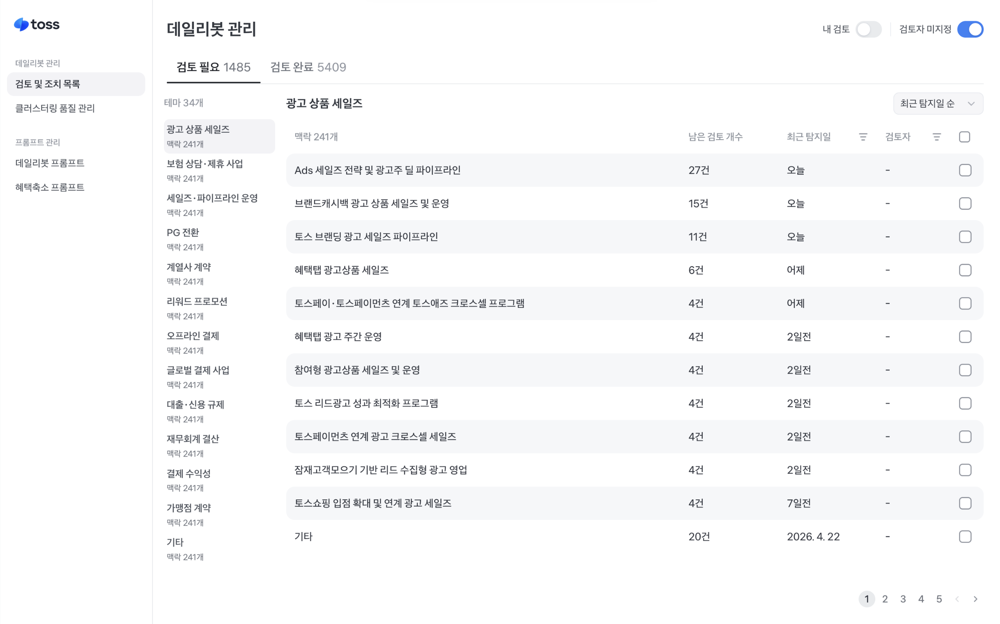
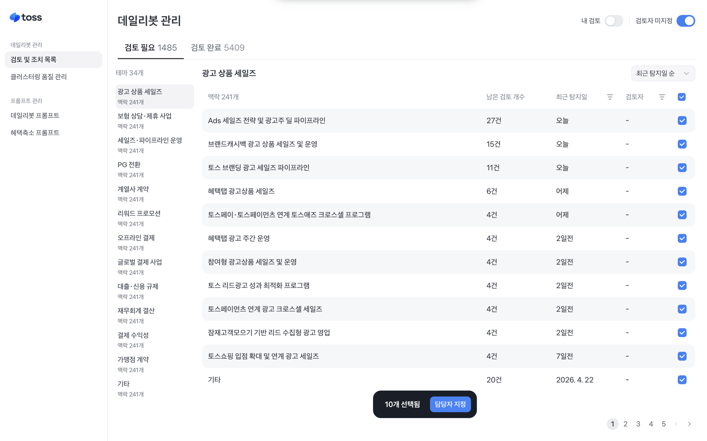
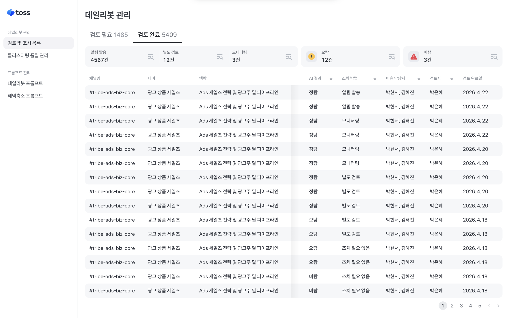
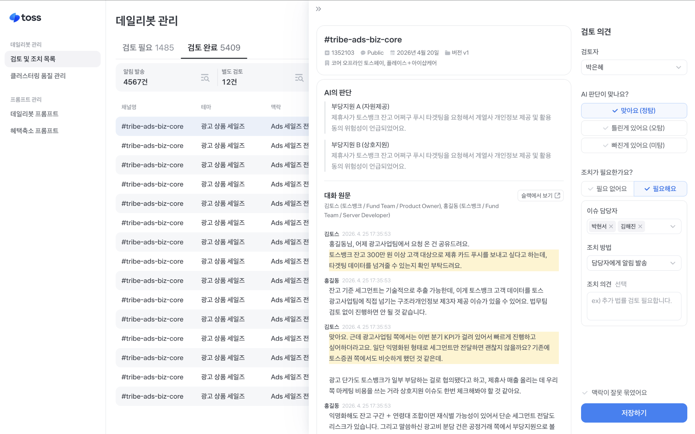

Through repeated experimentation, I raised our core metric by 53.4%. Release Date2026.04ContributionPlanning & Design 100%
Background
On Toss Alba, selecting your desired conditions helps you find postings that fit you
Intro
→
Condition Selection
→
Matching Results
→
Details
Here's how I raised our core metric application completion rate by 53.4%
AS-IS
→
TO-BE
Problem
We showed jobs matching the desired conditions, but 44% of users left without clicking a single posting
Intro
Condition Selection
Matching Results
Details
Problem
Why would users motivated enough to select all 5 conditions leave without viewing a posting?
Items users must select before reaching the results screen
Hypothesis
Users won't click because the postings shown don't match their conditions
Because there weren't enough postings, the system recommended jobs even if only 3 of the 5 conditions matched
Factor
Weight
Description
Distance Fit
40%
Distance between home/preferred work area and store
Experience Fit
10%
Relevant industry experience and duration
Industry Match
25%
Match between desired industry/role and posting's industry/role
Work Condition Fit
25%
Match of period/day/time
Total
100%
Final score out of 100
User Study
As expected, users questioned why mismatched postings kept appearing
"I wanted a cafe job, but a restaurant showed up" "I wanted a weekend job, but weekday jobs showed up"
In our survey, the top reason for not applying was the same: 'no postings matched what I wanted.'
38%
No postings matched my desired conditions
22%
Not looking to get a job right now
18%
Unsure what the job would actually involve
15%
Not enough store info, like photos or location
We wanted to recommend only perfect matches, but that wasn't realistic
Since postings only came from Albamon, we had limited room to grow supply
Solution
Since we couldn't add more postings, we focused on helping users find matches more easily
Failed
Weight Adjustment Experiment
Hypothesis: Boosting the industry weight to surface more industry-matched jobs would raise the application completion rate. (Industry came up most often in UT)
CON
● Industry 25%● Distance 40%● Experience 10%● Period/Day/Time 25%
VAR +1.6%
● Industry 40%● Distance 30%● Experience 10%● Period/Day/Time 20%
Failed
Filter & List UI Experiment
V1: Filters that make it easy to compare good postings would raise the application completion rate. V2: Emphasizing industry and store name would raise the application completion rate.
CON
V1 -0.2%
V2 +3.6%
Failed
Secondary Job Filter Experiment
Hypothesis: A filter to show only postings matching my chosen conditions would raise the application completion rate.
CON
VAR +0.6%
Result
Since every user wants something different, no single view could satisfy everyone
I prefer somewhere close
I prefer higher hourly pay
I only want to work weekends
User Study
Data analysis showed Toss Alba users aren't browsers — they're instant applicants
This is likely because short-term jobs made up a large share of applications, and unlike competitors, we lacked a filter-based browsing UI.
Applied within 1 minute
49%
Clicked 3 or fewer postings before first application
65%
For users who decide quickly, reducing hesitation was key
How can we get users to apply without hesitation?
We found a hint in a past user interview
In interviews, users were curious about the reason for the recommendation
"Was this recommended because it's close by?""Why was this recommended if the hours don't match?"
When we clearly showed the reason for each recommendation by highlighting the conditions that truly matched, the application completion rate rose
CON
V1 +32.7%
The clearer the reason for the recommendation, the more confident users became that 'this posting is right for me'
Hypothesis
Highlighting matching conditions on the results screen too would give users confidence and raise the application completion rate
Solution
We highlighted matching job conditions and kept only the single best-matching posting
V1: Highlighting matching job conditions would raise completion. V2: Highlighting only a single posting would raise completion further.
CON
V1
V2
V2 Application Completion Rate
+53.4%
Measurement Segment
CON
V1
V2
Results screen → Application complete
2.4%
3.0% (+31.2%)
3.6% (+53.4%)
Results screen → Posting details
47.3%
47.2% (-0.07%)
41.1% (-13.2%)
Posting details → Apply click
8.8%
10.3% (+17%)
13.4% (+52%)
Result
Users viewed fewer postings, but applied with far greater confidence
The job posting click-through rate dropped, but the application completion rate rose significantly. The clearer the basis for the recommendation, and the more we highlighted a single posting, the stronger users' intent to apply became on the posting details screen.
Job posting click-through rate -13.2%
Apply click-through rate +52.0%
Lessons learned
By moving beyond surface-level fixes and digging into who our users actually were, we moved the success metric
How can we help users find postings that match their conditions?
↓"Toss Alba users are closer to instant applicants than browsers"↓
How can we help users apply without hesitation?
Compliance AI Fair Trade Review Improvement
I improved the usability of the fair trade compliance admin, doubling review efficiency. Release Date2026.08ContributionDesign 100%
What Is the Fair Trade Admin?
An admin tool that detects and reviews fair trade risks in real time — like improper support and exclusion of competitors
STEP 1AI (DailyBot) scans Slack conversations
STEP 2Detects fair trade issues
STEP 3GRC Manager reviews whether it's an actual violation
Review List Screen
Review Detail Screen
Problem
The number of cases to review far exceeded available staff, straining operations
AI detects roughly 500 cases per day.
How can reviewers get through thousands of cases quickly?
User interviews showed that many review cases shared similar context
Hypothesis
Grouping issues by similar context and letting reviewers handle same-context cases at once would speed up the review process
Technical Solution
We introduced context clustering to group issues that shared context
Design Solution
For issues grouped under the same context, we let reviewers submit one review form for all of them
Review List Screen
Grouped issues that shared context.
Review Detail Screen
Issues grouped under the same context can be submitted all at once.
Solution
We designed this around 3 principles
1Focus only on what needs to be reviewed
2Keep the workflow uninterrupted
3Enable immediate answers
Solution 1
Focus Only on What Needs to Be Reviewed
AS-IS
Cases were sorted only by most recent detection date, making it hard to prioritize reviews.
TO-BE
We added badges like 'Affiliate Mentioned' and 'Competitor Mentioned' so higher-risk cases could be reviewed first.
Solution 2
Keep the Workflow Uninterrupted
AS-IS
Reviewers reviewed one case at a time, then had to return to the list.
TO-BE
We let reviewers review issues grouped under the same context on a single screen.
Solution 3
Enable Immediate Answers
AS-IS
Reviewers had to click a dropdown for every review, and open-ended answers made the review form slow to fill out.

TO-BE
We changed the options to checkboxes and categorized open-ended answers so they could be selected quickly.

Usability Test
We ran a usability test to validate the design
UT results showed users didn't immediately recognize the batch review feature
STEP 1) Submitted the review form thinking it was an individual review (Didn't notice all checkboxes on the left were already selected)
STEP 2) Noticed it was a batch review after seeing the modal
STEP 3) Closed the modal, unchecked the boxes, and resubmitted the review form
Should we uncheck the boxes by default to allow individual review, and make batch review optional?
Is the batch review feature actually necessary?
Considering how users actually review, batch review might be inconvenient
How Users Actually Review
1
To review an issue accurately, reviewers need to read the full message
2
Even within the same context, review outcomes can differ
User Interview Findings
"Efficiency matters, but processing without reading the full message doesn't align with review policy""Even within the same context, review form content differs about 40% of the time"
For batch review to work, the AI's summary would need to be accurate, and outcomes would need to match within the same context
Batch review wasn't realistically feasible
Solution
Instead of the batch review feature, we focused on ways to make individual review faster
AS-IS
TO-BE
We adjusted the final spec by weighing usability against development effort
Our guiding principle: 'one reviewer sticks with one context at a time to minimize context-switching cost.'
Problem 1
Reviewers usually decided what to review before starting, but this screen didn't support pre-assigning a reviewer
Solution 1
We let reviewers be pre-assigned by context so each reviewer could see only their own assigned cases


Problem 2
Conversations were long, making it slow to grasp the content
Solution 2
We highlighted the sentences behind the AI's judgment so reviewers could quickly grasp the content
Problem 3
For already-reviewed cases, users wanted to browse by individual case, not by context group
Solution 3
We let the completed-review list be browsed by individual case and made details viewable instantly, without navigating away


Result
After launch, we tracked dashboard metrics and user feedback to measure the impact
We increased review speed 2x and resolved the pain points users experienced
Reviews per Person
AS-IS
~170 per week
→
TO-BE
~360 per week
User Feedback
"Reviewing similar contexts together cut the time it takes to understand the content""It's great that I no longer have to go back and forth between the list and details""It's convenient — I just need a simple click on the review form"
Lessons Learned
Design should fit the user's mental model — not just add more features
I learned that even a feature that looks efficient — like batch review — can hurt usability if it doesn't match how people actually work.
Kakao Pay Securities Account Improvement
I redesigned the securities account screen — originally built on outdated assumptions — to match real user needs. Release Date2025.06ContributionPlanning & Design 100%
Background
Kakao Pay's account details page changed depending on how users got there
Entering from Assets Home
Entering from Transaction History
Background
To simplify management, we unified 4 account types into a single view
Here's how I improved the securities account specifically
AS-IS
→
TO-BE
Problem
Users ran into a few pain points with their securities account
"Why is my balance so low?" "I traded today, but it's not showing in my history"
Problem
On top of that, we provided less information than other services
Kakao Pay
Company T
Company N
Company M
Service
Info Provided in Account Details
Kakao Pay
Transaction History
Company T
Transaction History, Investment Status
Company N
Transaction History, Investment Status
Company M
Transaction History, Investment Status
Every competitor showed investment status — Kakao Pay was the only one that didn't
Do users really want to see investment status in account details? Wouldn't it just be easier to check the brokerage app directly?
User Study
Users of other services' MyData feature opened their securities account specifically to check investment status
Their brokerage app was inconvenient, so they checked investment status in an app that was easier and more accessible.
72%
To check my investment status — valuation, returns, etc.
46%
To check deposit/withdrawal or trade history
33%
To deposit or transfer money
28%
To check cash balance
Goal
We narrowed the problems down to 2
1
Hard to check balance or transaction history
2
Missing info users want, like investment status
Problem 1
The balance shown was just cash balance, making assets look smaller than they were
Solution 1
We changed balance to show cash + valuation amount, with cash balance listed separately underneath
Problem 2
Trade history only showed 'Buy' or 'Sell,' making it hard to find a specific transaction
Solution 2
We showed the exact product name for each trade, and separated trade history from deposits/withdrawals for easier lookup
AS-ISTO-BE
Problem 3
The UI centered on transaction history, so investment status was nowhere to be seen
Solution 3
We explored how to best display investment status
Concept 1: Emphasize investment status, de-emphasize transaction history Concept 2: Keep transaction history on the first screen, move investment status to a bottom sheet
Concept 1
Concept 2
We made investment status — the info users were curious about — more visible
Concept 2 had its own problem: the top section ran too long, pushing key content below the fold.
Concept 1
Concept 2
But developing Concept 1 came with challenges
"The dev spec is too large"
"The impact seems low relative to the spec"
"Isn't investment status something only some users want?"
Is there a way to show investment status with a minimal spec?
Solution 3
We added a button linking to the 'My Investments' service
'My Investments' shows all of a user's investment holdings.
We asked securities account users for feedback and chose the copy that was most intuitive and sparked curiosity
Users strongly disliked seeing losses, so they reacted negatively to copy that expressed gains/losses.
Result
After launch, we looked at VoC and engagement metrics
VoC related to balance and transaction history decreased
Major VoC Before Launch
"Why is my balance so low?"
"I traded today, but it's not showing in my history"
"It doesn't show what product I bought or sold"
We turned what used to be a dead end — checking balance and history — into a path toward exploring the 'My Investments' service
'Investing' Button Click Rate
~32%
Rate of 1+ Clicks in 'My Investments'
~76%
→→
Lessons learned
1
By digging into users' hidden needs, we found the right direction for improvement
A survey revealed users wanted to see investment status on the account details screen.
2
We initially sketched the big picture, but what we actually needed was incremental improvement
To test the hypothesis that 'users want to see investment status in account details,' we added just a single button.